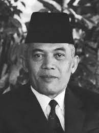
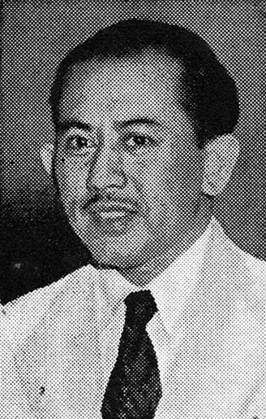
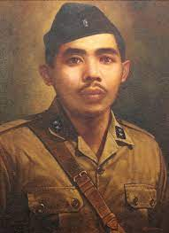
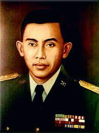

A.H. Nasution
Lahir: 3 Desember 1918, Sumatra Utara.
Wafat: 6 September 2000.
Jasa-jasa:
- Memadamkan Pemberontakan Madiun (1948).
- Berperan dalam Perang Kemerdekaan dan Pertempuran Medan Area.
- Pengembangan konsep Pertahanan Semesta.
- Kepala Staf Angkatan Darat Indonesia.
- Terlibat dalam Tragedi 30 September.
-
Pertahanan bukan hanya soal tentara, tapi soal seluruh rakyat Indonesia yang mencintai negaranya.

M. Roem
Lahir: 16 Agustus 1908, Jawa Barat.
Wafat: 26 November 1971.
Jasa-jasa:
- Konferensi Meja Bundar (1949).
- Pemerintahan Darurat Republik Indonesia (PDRI).
- Diplomasi internasional sebagai Duta Besar.
- Karir politik dan diplomatik.
- Aktivitas dalam pendidikan dan penulisan.
-
Kemerdekaan bukanlah pemberian dari negara lain. Kemerdekaan adalah hak kita, dan kita harus berjuang untuk meraihnya."

I Gusti Ngurah Rai
Lahir: 30 Januari 1917, Bali.
Wafat: 20 November 1946.
Jasa-jasa:
- Memimpin pertahanan Bali dalam Agresi Militer Belanda II.
- Gugur dalam Pertempuran Puputan Margarana.
- Puputan Margarana sebagai simbol perlawanan Bali.
-
Aku tidak ingin hidup dalam perbudakan. Kalau kita takut mati, bagaimana bisa kita mencapai kemerdekaan?

Jenderal Soedirman
Lahir: 24 Januari 1916, Jawa Tengah.
Wafat: 29 Januari 1950.
Jasa-jasa:
- Pertempuran Lima Hari dan peran kunci dalam revolusi.
- Panglima Tertinggi Tentara Nasional Indonesia (TNI).
- Inspirator dan pemimpin militer yang adil.
- Gugur pada usia yang relatif muda.
-
Kemerdekaan tidak akan pernah berharga selama masih ada penindasan dan kemiskinan di tengah-tengah kita.

Ahmad Yani
Lahir: 19 Juni 1922, Jenar, Bawen, Jawa Tengah.
Wafat: 1 Oktober 1965.
Peran dan Jasa:
- Terlibat dalam memadamkan Pemberontakan Madiun (1948) dan aktif selama Perang Kemerdekaan Indonesia melawan agresi militer Belanda.
- Kontribusi dalam konsep Pertahanan Semesta, mendorong partisipasi seluruh masyarakat dalam pertahanan negara.
- Menjabat sebagai Kepala Staf Angkatan Darat (KSAD) pada periode 1949-1952 dan 1955-1956.
- Korban dalam Tragedi G30S (Gerakan 30 September) pada 1965, tetapi berhasil selamat dari percobaan kudeta tersebut.
- Pensiun dari militer pada 1971 setelah menjabat sebagai Menteri Pertahanan dan Keamanan.
- Terlibat dalam politik dan diplomasi, menjadi Ketua Umum Golkar dan Duta Besar Indonesia untuk Arab Saudi.
- Aktif di dunia pendidikan sebagai rektor Universitas Nasional (UNAS) dan penulis buku tentang masalah militer dan politik.
-
Berikan aku 10 pemuda, niscaya akan kuguncangkan dunia